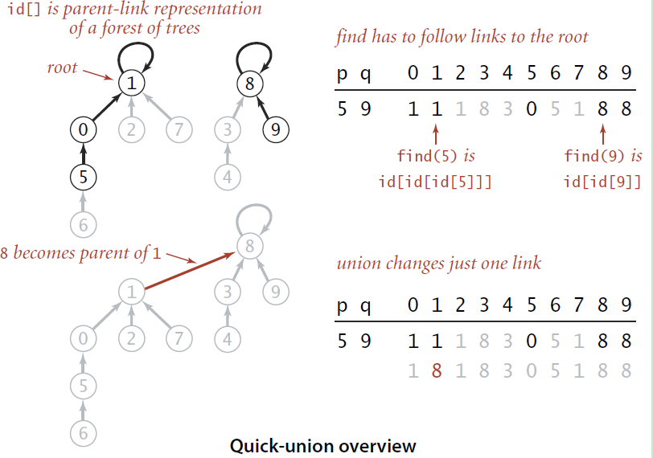

查并集的进化之路
定义
并查集是一种树形的数据结构，顾名思义，它用于处理一些不交集的 合并 及 查询 问题。 它支持两种操作：
- 查找（Find）：确定某个元素处于哪个子集；
- 合并（Union）：将两个子集合并成一个集合。
也就是说，不支持集合的分离、删除。
Quick-Find算法
以下图为例，连通关系为[(1,2), (0, 1), (0, 3), (4, 7), (5, 6), (5, 7), (7, 8), (8, 9)]。

首先初始化所有节点，认为它们属于一个组，因此不连通的节点必然就属于不同的组：
| element | 0 | 1 | 2 | 3 | 4 | 5 | 6 | 7 | 8 | 9 |
|---|---|---|---|---|---|---|---|---|---|---|
| group number / id | 0 | 1 | 2 | 3 | 4 | 5 | 6 | 7 | 8 | 9 |
输入pair(1, 2)，则将所有group number为0和1的element改为一致（都为0或都为1，这里以较小值为例）。
| element | 0 | 1 | 2 | 3 | 4 | 5 | 6 | 7 | 8 | 9 |
|---|---|---|---|---|---|---|---|---|---|---|
| group number / id | 0 | 1 | 1 | 3 | 4 | 5 | 6 | 7 | 8 | 9 |
输入pair(0， 1)，这里就需要把element 1和element 2的group number都改为0，：
| element | 0 | 1 | 2 | 3 | 4 | 5 | 6 | 7 | 8 | 9 |
|---|---|---|---|---|---|---|---|---|---|---|
| group number / id | 0 | 0 | 0 | 3 | 4 | 5 | 6 | 7 | 8 | 9 |
正因为每次都需要找到所有的特定group number的element，所以union的时间复杂度为O(N)，find的时间复杂度为O(1)。N为element的个数，下同。
代码
class QuickFind(object):
id = []
count = 0
def __init__(self, n):
self.count = n
for i in range(n):
self.id.append(i)
def connected(self, p, q):
return self.find(p) == self.find(q)
def find(self, p):
return self.id[p]
def union(self, p, q):
idp = self.find(p)
idq = self.find(q)
if idp != idq:
for i in range(len(self.id)):
if self.id[i] == idq: # 将q所在组内的所有节点的id都设为p的当前id
self.id[i] = idp
self.count -= 1Quick-Union算法
对于只需要实现查找和合并的并查集，O(n)的时间复杂度还是太高了，当时间复杂度需要降低到对数级，我们自然想到了树这个数据结构。由于并查集初始化中每一个element对于一个group number，所以可以通过数组中的跳转来实现树的寻找父节点功能。以下图为例，最开始每一个element的父节点都是自身，每次查找沿着父节点向上， 直到根节点。每次合并把找到的两个根节点的其中一个设置为另一个的父节点。

union和find的时间复杂度取决于树的高度。
代码
class QuickUnion(object):
id = []
count = 0
def __init__(self, n):
self.count = n
for i in range(n):
self.id.append(i)
def connected(self, p, q):
return self.find(p) == self.find(q)
def find(self, p):
while (p != self.id[p]):
p = self.id[p]
return p
def union(self, p, q):
root_p = self.find(p)
root_q = self.find(q)
if root_p != root_q:
self.id[root_q] = root_p
self.count -= 1注意：此时self.id存放的不再是每个元素的组别而是父节点。
Weighted Quick-Union 算法
既然采用了树的结构，就有可能出现极端情况，是的树操作的时间复杂度退化成O(N)。为了避免这种情况，常规方法是使用平衡树，而对于并查集，只需要在union时，选择将小的树合并到大树上就可以了。
理论上在平衡树合并两个树时，应当用根的高度来衡量两个树的大小，但是这里使用根节点的子孙节点的数量来衡量，union和find的时间复杂度接近于O(log N)。这是因为这个方法还可以优化，通过路径压缩可以将union和find的时间复杂度降低至O(1)，而这样做会改变根的高度。
代码
class WeightedQuickUnion(object):
id = []
count = 0
sz = []
def __init__(self, n):
self.count = n
for i in range(n):
self.id.append(i)
self.sz.append(1) # inital size of each tree is 1
def connected(self, p, q):
return self.find(p) == self.find(q)
def find(self, p):
while (p != self.id[p]):
p = self.id[p]
return p
def union(self, p, q):
root_p = self.find(p)
root_q = self.find(q)
if root_p != root_q:
if self.sz[root_p] < self.sz[root_q]:
self.id[root_p] = root_q
self.sz[root_q] += self.sz[root_p]
else:
self.id[root_q] = root_p
self.sz[root_p] += self.sz[root_q]
self.count -=1输出self.sz可以看到id = 1和id = 5的组别包含了所有元素，id = 4组中的(4, 7)实际上已经移动到id = 5组中。
size: [1, 4, 1, 1, 2, 6, 1, 1, 1, 1]Weighted Quick-Union With Path Compression 算法
第一种方法是在find方法的执行过程中保存所有路过的中间节点到一个数组中，然后在while循环结束之后，将这些中间节点的父节点指向根节点。但是这个方法在find操作很频繁时会频繁生成中间节点数组，相应的分配销毁的时间自然就上升了。另一种方法是在寻找q的根节点的同时不断改变父节点，相当于在寻找根节点的同时，不断地将q移动到上一级的节点下，对路径进行了压缩，使整个树结构扁平化。相应的实现如下，实际上只需要在find方法中添加一行代码。
def find(self, p):
while (p != self.id[p]):
self.id[p] = self.id[self.id[p]]
p = self.id[p]
return p这样self.id中保存的既是个元素的组别又是各元素的父节点，正因为如此union和find的时间复杂度降低到了O(1)。
final parent/id list is 1,1,1,1,5,5,5,5,5,5例题
leetcode 200. 岛屿数量
给定一个由 ‘1’（陆地）和 ‘0’（水）组成的的二维网格，计算岛屿的数量。一个岛被水包围，并且它是通过水平方向或垂直方向上相邻的陆地连接而成的。你可以假设网格的四个边均被水包围。
输入: 1 1 1 1 0 ====> 输出: 1
1 1 0 1 0
1 1 0 0 0
1 0 0 0 0简单应用Quick-Union算法即可，用dict代替list。
class Solution:
def numIslands(self, grid: List[List[str]]) -> int:
if not grid or not grid[0]:
return 0
row = len(grid)
col = len(grid[0])
def find(x):
f.setdefault(x, x)
while f[x] != x:
x = f[x]
return x
def union(x, y):
rootx = find(x)
rooty = find(y)
if rootx != rooty:
f[rootx] = rooty
return 1
return 0
s = 0
f = {}
for i in range(row):
for j in range(col):
if grid[i][j] == '1':
s += 1
for x, y in ((1, 0), (0, 1)):
tmp_i = i + x
tmp_j = j + y
if 0 <= tmp_i < row and 0 <= tmp_j < col and grid[tmp_i][tmp_j] == '1':
# 如果需要合并那么总岛屿数就减一，不需要合并则不变（减零）
s -= union((i, j), (tmp_i, tmp_j))
return sleetcode 684. 冗余连接
在本问题中, 树指的是一个连通且无环的无向图。
输入一个图，该图由一个有着N个节点 (节点值不重复1, 2, …, N) 的树及一条附加的边构成。附加的边的两个顶点包含在1到N中间，这条附加的边不属于树中已存在的边。
结果图是一个以边组成的二维数组。每一个边的元素是一对[u, v] ，满足 u < v，表示连接顶点u 和v的无向图的边。
返回一条可以删去的边，使得结果图是一个有着N个节点的树。如果有多个答案，则返回二维数组中最后出现的边。答案边 [u, v] 应满足相同的格式 u < v。
输入: [[1,2], [1,3], [2,3]]
输出: [2,3]
解释: 给定的无向图为:
1
/ \
2 - 3遍历所有的边，union所有边的两个顶点，如果出现两个顶点已经连接的情况，说明已经构成换，删掉这条边即可。实现如下：
class Solution:
def findRedundantConnection(self, edges: List[List[int]]) -> List[int]:
def find(x):
f.setdefault(x,x)
while x != f[x]:
f[x] = f[f[x]]
x = f[x]
return x
def union(x, y):
rootx = find(x)
rooty = find(y)
if rootx != rooty:
f[rootx] = rooty
return 1
return 0
f = {}
for x, y in edges:
if not union(x, y): return[x, y]总结
随着一步步地深入，我们最终将查并集union和find的时间复杂度降低到了O(1)。本文中的四种算法的时间复杂度如下表所示。
| Algorithm | Constructor | Union | Find |
|---|---|---|---|
| Quick-Find | N | O(N) | O(1) |
| Quick-Union | N | Tree height | Tree height |
| Weighted Quick-Union | N | near to O(log N) | near to O(log N) |
| Weighted Quick-Union With Path Compression | N | Very near to O(1) | Very near to O(1) |
需要注意Path Compression是将各节点压缩到根节点下，所以Weighted仍然有意义。当然如果还需要输出连通路径，这个方法是没办法实现的，需要BFS或DFS算法来实现。
错误与不足请不吝指正，转载请注明，谢谢